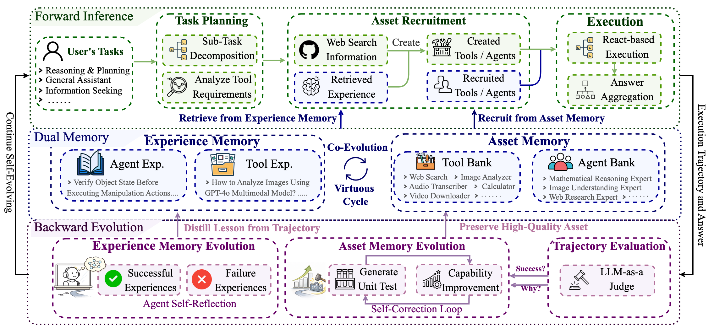
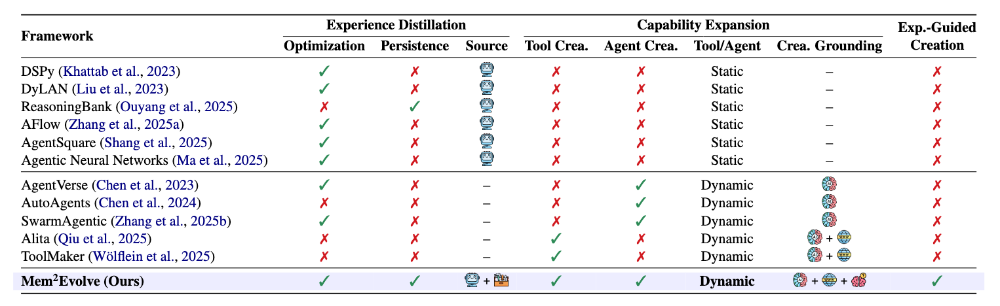

Mem$^{2}$Evolve: Towards Self-Evolving Agents via Co-Evolutionary Capability Expansion and Experience Distillation
Note: We are actively preparing the codebase and supplementary materials, which are currently undergoing the company's internal process review prior to public release.
Abstract
While large language model-powered agents can self-evolve by accumulating experience or by dynamically creating new assets (i.e., tools or expert agents), existing frameworks typically treat these two evolutionary processes in isolation. This separation overlooks their intrinsic interdependence: the former is inherently bounded by a manually predefined static toolset, while the latter generates new assets from scratch without experiential guidance, leading to limited capability growth and unstable evolution. To address this limitation, we introduce a novel paradigm of co-evolutionary Capability Expansion and Experience Distillation. Guided by this paradigm, we propose Mem$^{2}$Evolve, which integrates two core components: Experience Memory and Asset Memory. Specifically, Mem$^{2}$Evolve leverages accumulated experience to guide the dynamic creation of assets, thereby expanding the agent's capability space while simultaneously acquiring new experience to achieve co-evolution. Extensive experiments across 6 task categories and 8 benchmarks demonstrate that Mem$^{2}$Evolve achieves improvement of 18.53% over standard LLMs, 11.80% over agents evolving solely through experience, and 6.46% over those evolving solely through asset creation, establishing it as a substantially more effective and stable self-evolving agent framework.
Methodology

Overview of Mem$^{2}$Evolve, a self-evolving agent framework built on a Dual-Memory mechanism. The evolution proceeds in two phases. During Forward Inference, the agent recruits tools and expert agents from Asset Memory to execute the current task. When the task exceeds its current capability boundary, Experience Memory is leveraged to guide the stable creation of new assets on demand. During Backward Evolution, newly validated assets are preserved in Asset Memory to achieve persistent capability expansion, while strategic insights distilled from execution trajectories are accumulated into Experience Memory. This forward-backward loop enables the co-evolution of capabilities and experience, forming a stable self-evolving cycle.

Comparison of self-evolving agent frameworks. Optimization indicates whether experience is used to optimize the agent (e.g., prompts). Persistence denotes whether experiences are persistently stored for future reuse. Source: agent task execution trajectory and tool creation process. Tool Crea. and Agent Crea. indicate whether the framework supports creation of tools and expert agents, respectively. Tool/Agent denotes whether the toolset and expert agents are static or dynamic. Crea. Grounding indicates the knowledge sources used for asset creation: parametric knowledge, web search information, and experience. Exp.-Guided Creation indicates whether new assets are created under the guidance of past experience.
Experiments
| GAIA | Embodied | Multi-Hop QA | Math | Planning | Web Interaction | |||||||
|---|---|---|---|---|---|---|---|---|---|---|---|---|
| Method | L1 | L2 | L3 | Total | ALFWorld | HotpotQA | 2Wiki | AIME24 | AIME25 | TravelPlanner | WebShop | Avg. |
| Naive-Large Language Model | ||||||||||||
| GPT-5-Chat (Direct) | 16.98 | 12.79 | 7.69 | 12.49 | 83.58 | 50.40 | 81.80 | 60.00 | 46.67 | 38.68 | 22.31 | 49.49 |
| GPT-5-Chat (CoT) | 24.53 | 17.44 | 11.54 | 17.84 | 83.58 | 47.40 | 74.40 | 66.67 | 56.67 | 39.51 | 27.49 | 51.71 |
| GPT-5-Chat (ReAct) | 26.42 | 17.44 | 11.54 | 18.47 | 86.87 | 41.40 | 48.40 | 66.67 | 60.00 | 39.13 | 25.10 | 48.27 |
| OpenAI-DeepResearch$^{\dagger}$ | 74.29 | 69.06 | 47.60 | 67.36 | --- | --- | --- | --- | --- | --- | --- | --- |
| Experience-Centric Evolving | ||||||||||||
| DyLAN | 24.53 | 19.78 | 11.54 | 18.62 | 91.20 | 52.00 | 65.00 | 46.67 | 43.33 | 43.15 | 36.40 | 49.55 |
| EvoAgent | 22.64 | 19.78 | 11.54 | 17.99 | 92.50 | 54.40 | 75.00 | 66.67 | 43.33 | 49.20 | 37.80 | 54.61 |
| AFLOW | 26.42 | 17.44 | 15.38 | 19.75 | 93.40 | 60.80 | 72.40 | 66.67 | 63.33 | 53.24 | 37.90 | 58.44 |
| DSPy | 30.19 | 15.12 | 11.54 | 18.95 | 92.80 | 55.60 | 76.40 | 66.67 | 50.00 | 44.90 | 35.50 | 55.10 |
| Capability-Centric Evolving | ||||||||||||
| Alita | 81.13 | 75.58 | 46.15 | 72.73 | 86.13 | 58.80 | 77.40 | 70.00 | 66.67 | 48.32 | 30.21 | 63.78 |
| AgentVerse | 30.19 | 16.28 | 19.23 | 21.90 | 88.32 | 38.60 | 74.60 | 60.00 | 50.00 | 47.25 | 32.53 | 51.65 |
| AutoAgens | 35.85 | 24.42 | 19.23 | 26.50 | 87.92 | 54.20 | 73.80 | 40.00 | 36.67 | 43.52 | 31.40 | 49.25 |
| SwarmAgentic | 28.30 | 18.60 | 13.46 | 20.40 | 88.79 | 56.00 | 80.00 | 46.67 | 40.00 | 59.14 | 34.12 | 53.14 |
| Ours | ||||||||||||
| Mem$^{2}$Evolve | 88.68 | 82.56 | 57.69 | 76.31 | 94.31 | 60.80 | 82.00 | 76.70 | 73.33 | 59.25 | 39.20 | 70.24 |
Main results across 6 tasks and 8 benchmarks, reported as Pass@1 for each benchmark. The best results are highlighted in bold, and the second-best results are underlined. $^{\dagger}$ Results are from the original paper.
BibTeX
@article{Mem2Evolve,
title={Mem$^{2}$Evolve: Towards Self-Evolving Agents via Co-Evolutionary Capability Expansion and Experience Distillation},
author={Zihao Cheng and Zeming Liu and Yingyu Shan and Xinyi Wang and Xiangrong Zhu and Yunpu Ma and Hongru Wang and Yuhang Guo and Wei Lin and Yunhong Wang},
journal={},
year={2026},
url={}
}